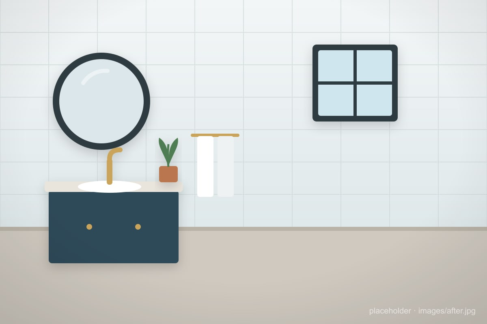
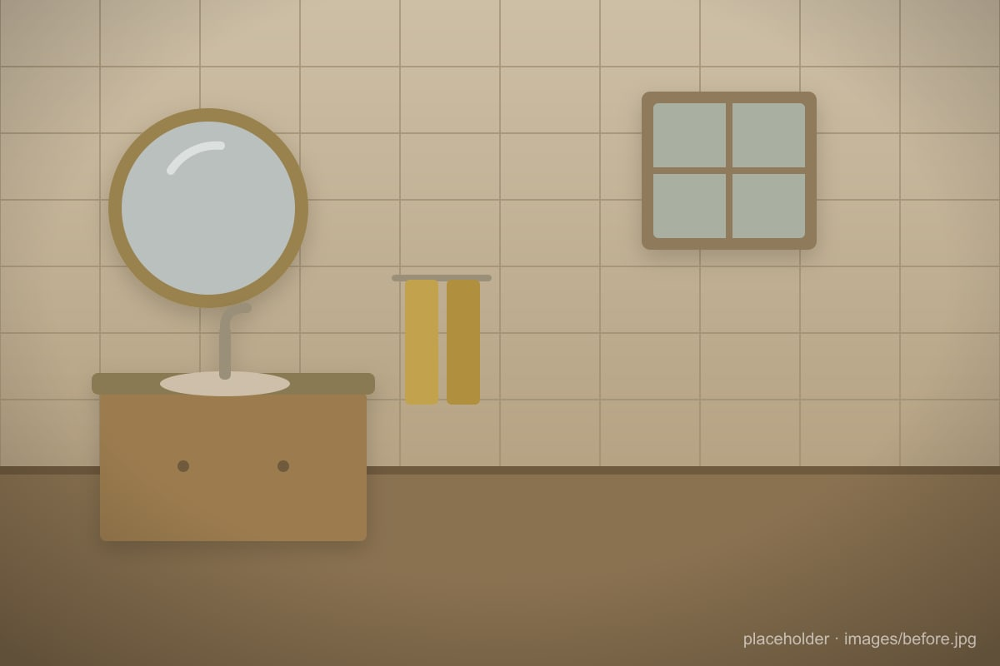

Home Project
The Bathroom Renovation
Same footprint, a completely different room. Drag the handle to peel back the old and reveal the new.


Drag, or focus the handle and use ← →
Home Project
Same footprint, a completely different room. Drag the handle to peel back the old and reveal the new.


Drag, or focus the handle and use ← →